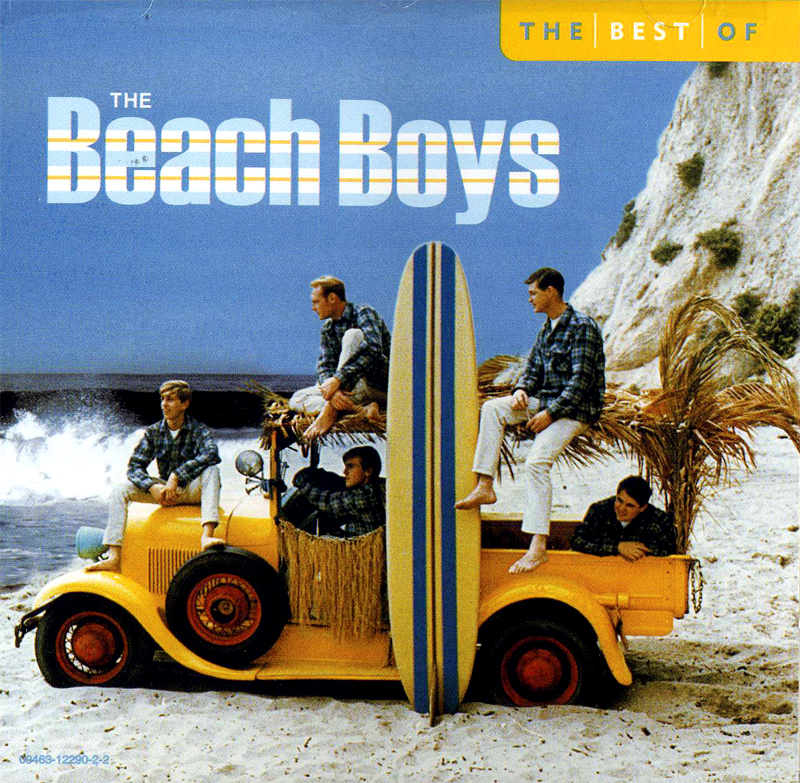

Carl and The Passions, the Pendletones, Kenny and the Cadets with older brother Brian there songwriter formed one of the longest-running singing group in Hawthorne in 1961.
When one of their earliest songs Surfin was released on a local label the name Beach Boys was innocently adopted.
They got a recording contract with Capitol Records during the summer of 1962. Over the next 18 months the Beach Boys had 10 US hits and released four albums.
In 1963 The Beach Boys song Surfin USA reached the UK.
In 1964 four more albums was released, represented an amazing 8 albums in just over 2 year with 6 of than were arranged and produced by Brain.
In America, the Beatles had met their unmatched dominance of the chart.
The Beach Boys, more especially Brian, could only stand back in amazement.
At the same time Brian, felt so threatened that it drove him to compete against the Beatles.
In 1966 the Beach Boys were voted number 1 group in the world by the UK music press.
While the group's instrumental skill was average, the flawless combination of the members voices delivered a sound that was unmistakable.
Both Carl and Brian had perfect pitch, even though Brian was deaf in one ear.
Sources
http://www.beachboys.com/history.html